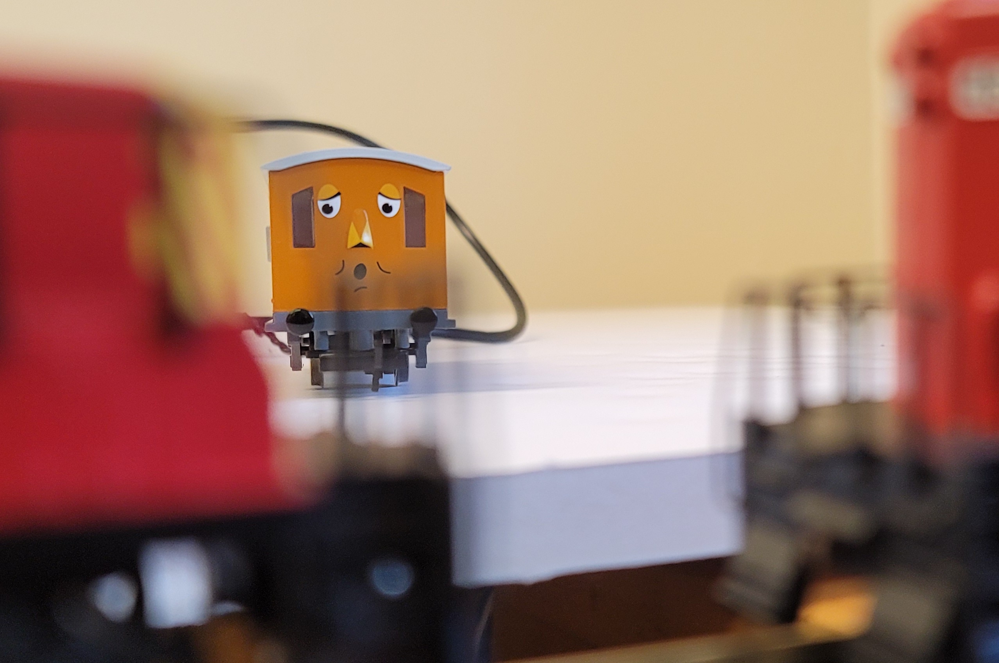
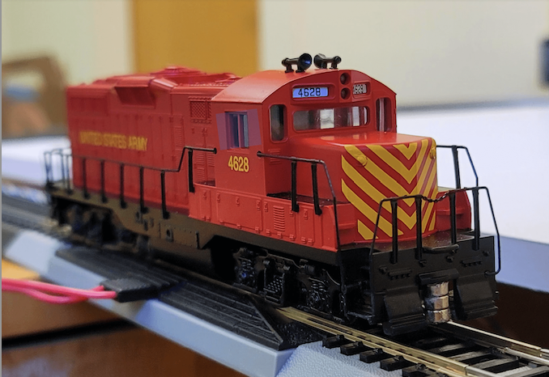
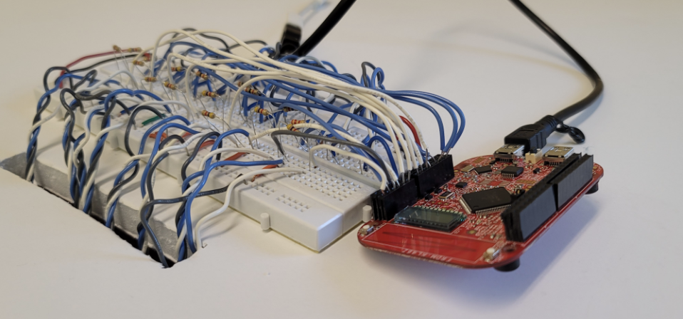
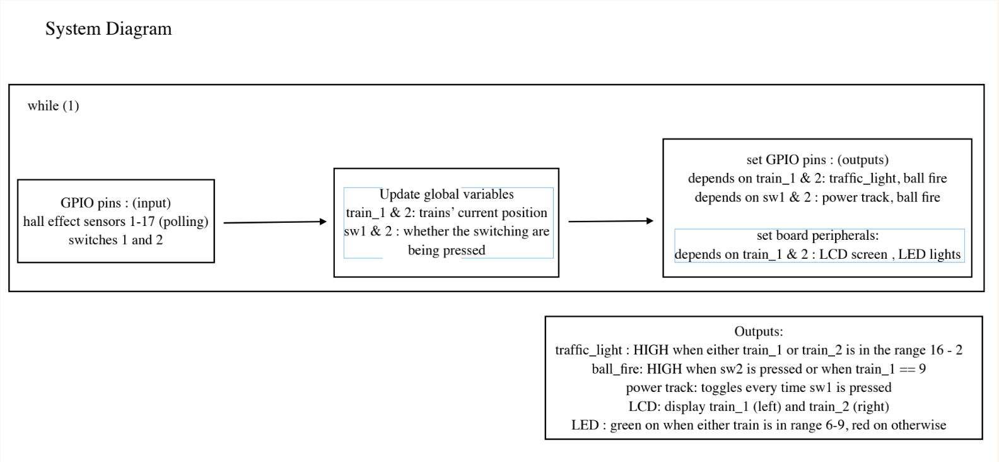
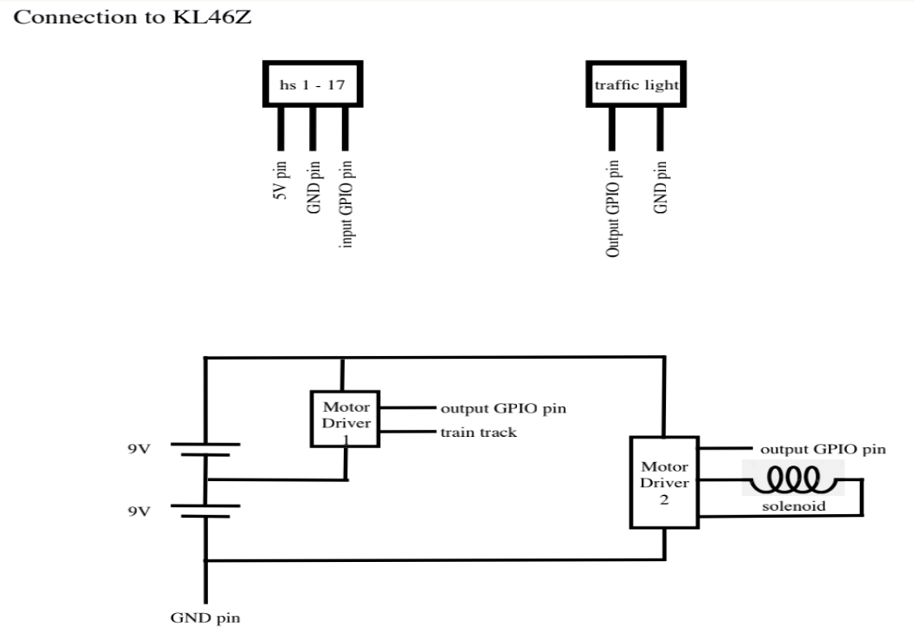
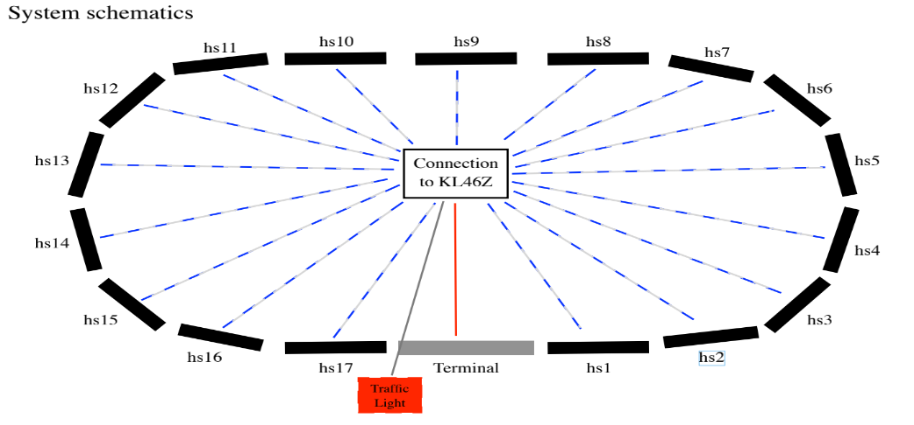

Notable Napp
A Synchronous Position Monitor and Interaction Interface For Toy Trains (Designed by CCOs - Crystal Hu, Taylor Jiang, Carol Zhao)

This project is inspired by multiple TV shows such as Thomas the Tank Engine and his Friends, and Young Sheldon. The synchronous position monitor and interaction interface for toy trains we've created can tell users which segment of the track the two toy trains are at through the LCD screen of the FRDM-KL46Z board. There is also a user-interactive feature where users can push a button to fire a light-weight ping-pong that is set up on the body of a toy train and then later catch the ball with the same train. To make our train track scenario more realistic, we also feature a traffic light that would light up as the toy trains enter the train station.
Our project can be further applied to more daily life scenarios, such as sensing the arrival of train in railway systems. Throughout the self-designed project, we obtained more hands-on experience on integration of electronics and polling, as well as GPIO configurations. We also learned more about how to design and breakdown a project.

System Overview
Main feature is a user interface (displayed on the LCD pad of the board) where users can monitor the train positions at all times. We will use multiple hall sensors embedded on the train tracks to detect the trains' position. All the hall sensors/ train segments will be numbered, and the number of the hall sensor/train track which a train has just passed will be displayed on the LCD pad. In our code, we will use polling to retrieve the position of the trains.
Supplementary features include a coded “traffic light” (external hardware), placed at the entry of "train station" defined by us. The traffic light will light up when a train is about to enter the station, and will be turned off when the train has completely exited the region. We will also have a "tunnel", and the LED lights (on the board) will turn on/off when the train enters/ exits the tunnel. At the tunnel, we also want to include a ball-tossing game to the train which has two modes: automated and manually controlled by players, utilizing the button built in on the board. In automated mode, the train will toss the ball before entering the tunnel. The tunnel will be defined at a straight section of the track, so the ball will fall back to the train coach. In the manual mode, the player can control when they want to fire the ball, and the train may not be able to catch it.

Project Video Demo
Here is a condensed version of the project video demo. A detailed demo video of the project can be found here.
Detailed Technical Description
Here are the System Design Diagram and KL46Z Board Schematics.

System Design Diagram

KL46Z Board Schematics
Position Monitor
Position monitor is the major component of our project: all other features build on it. To monitor the positions of our two trains, we used Hall Effect Sensors. Each track is labeled with a number (from 1 to 17 counter-clockwise starting from the right of the terminal track) and has a hall sensor embedded in it (except for the terminal track). The magnets are glued to the bottom of the train heads, so they can pass by the hall sensors as close as possible and be best detected.
The hall sensors are three-terminal devices. The ground terminals of all sensors are connected to the ground pin of our KL46Z board. The input terminals of all sensors are connected to the 5V output pin on the KL46Z board. The output terminals of all sensors are connected individually to GPIO pins on the board, which are set as input pins in our program. We also connected 4.7kΩ resistors between input and output terminals of the sensors to complete the circuit loop and to reduce the current to a safe level for our board.
Our program uses the idea of polling to read the inputs from these sensors. The sensor inputs are stored as global variables for other features to use. For our position monitor, we used the LCD screen on the board to display the current locations of two trains. The high-level idea for updating position uses hall sensor number it reads in, and compare the hall sensor position with train_1 and train_2 position to determine which train position to update. For example, we have train 1 at position 9 and train 2 at position 5. Now, when we read in a hall sensor position at 6, we know that we should update train 2's position by comparing the number with train positions.
We use two functions to handle hall sensor polling: init_hs_polling() and hs_polling(). These two functions are very similar in the general idea for polling hall sensor position, and they are different that the init_hs_polling() is used to initialize train positions respectively, while the hs_polling() function is used to constantly update train positions. After position initialization at the very beginning, the code will mostly stay in the hs_polling() function. Besides updating positions, the hs_polling() function is also responsible to monitor track power control, ball firing, and traffic lights. These features will be discussed as follow.

Track Power control
We used the KL46Z board to control the train track, and thus starting and stopping the trains. The train set is designed in a way that the train tracks are directly powered, and the metal rails conduct the current to the motors in the train heads. Therefore, to start and stop the trains, we simply needed to power on/off the train tracks. Since we are running two trains on the track, a minimum of 5V power supply is needed to get both trains to desired speed. Again, our board's GPIO cannot meet this demand, so we used another motor driver to power the tracks. This driver is powered with only one 9V battery (two batteries also works but the train speed becomes crazy), and the logic input is again connected to our board.
To set up the power button, we first configure a switch SW1 by finding the relevant GPIO pin, enabling clock for port, setting the direction of GPIO to input, enabling the pull-up resistor, and configuring IRQC. Then, we write helper functions operate_switch_polling_power() and power_toggle() that when the button is pressed, the power will be toggled. Finally, operate_switch_polling_power() is added to our hall sensor polling functions so that it can poll to check whether the power button is pressed. When the power button is pressed, both trains will start moving. Otherwise, trains will stop right away.
Ball Firer
We used a solenoid to launch a ping pong ball. Since the solenoid requires a large supply current, we cannot power it directly using one of the GPIO pins on the board. Instead, we connected the solenoid to a motor driver, which is powered by two 9V batteries. The logic input of the driver is then connected to an output pin of the board. When the driver's logic input is pulled to HIGH by the board's output, the driver turns on and powers the solenoid. To fire the ping pong ball, we set the output to 1, wait for 10000 clock cycles, then set the output to 0 again, so the solenoid quickly turns on and off.
We used the LEDs on the board to indicate a good time for firing the ball. In order for the ball to be caught by the train, the ball should be fired when the train is at the straight sections of the track. On our track, this is from track 6 to track 9. We checked for the trains' positions stored as global variables to determine when to light the LEDs. When train_1 is anywhere between track 6 and 9, green LED lights up. Otherwise, red LED lights up.
There are two ball-firing modes that users can choose from. The first one is automatic firing setting that when train 1 passes track 9, the ball will be automatically fired. The other one is manually controlled firer that users can press button to fire the ball. The ball firer button follows a similar set up process to the power button, except using a different switch pin. The solenoid is controlled to fire ball by setting the pin output to 1, then back to 0. We write helper functions auto_ball_fire() for automatic firing that when train_1 == 9, then the ball will be fired by. We also write function for manual control operate_switch_polling_ball() that when button is pressed, the ball will be fired.
Traffic Light
The last small feature of our system is a traffic light model. The lights can be directly turned on/off by the board's GPIO pins, so no motor driver is needed this time. The traffic light turns on when a train approaches the terminal and turns off when there is no train in the terminal region. On our track, this region is defined from track 16 to track 2 (16-17-terminal-1-2). We check for the trains' positions stored as global variables to determine when to pull up the output. When either train's position is greater than 15 or less than 2, we light up the traffic light.
Testing
The most challenging part of this project was debugging and coordinating the code and hardware. To debug the logic of the code, we would together talk through each branch of code and check that the values of each step were as expected by passing values to global variables and displaying the outputs. We also wrote separate test files to test the features individually, such as polling hall sensors and switch control.
Another approach we took for the probing between the code and circuit parts was by checking the voltage of circuit elements using DMM, to see if the parts were actually receiving or emitting high or low signals. For example, in a summary, to figure out why the solenoid was not firing the ping-pong ball when it was supposed to, we first checked if the corresponding hall sensor was updating the position of the toy train (checking for global variable in debug mode); then we checked the value output to the driver that controlled the solenoid (using DMM to measure the voltage drop between the output pin and GND pin); we also checked the wire connecting the solenoid and the driver was at the voltage desired (using DMM again to measure the voltage drop across the solenoid terminals).
We also separately designed test cases for hall sensor detecting positions and switch behaviors to ensure that two of the most important portions of the project are functioning as we expected. For example, we wrote testing cases for switches by connecting the code to LEDs, and observe whether green and red LEDs light up properly when we press separate buttons. If LEDs are presenting accurate behaviors, we then connect the code to tracks and solenoids. The project was inspected thoroughly as we made any progress.
More information and code about the project can be found here.